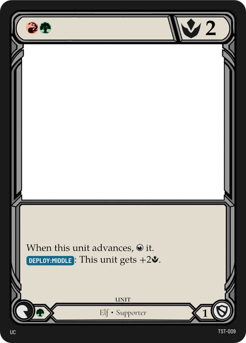

WAR-TCG
A five-colour trading card game about a kingdom fighting on every front. Every card in your hand can be a resource, a threat or a shield, and you choose which.
- My role
- Sole designer: rules, colour pie, balance, templates, tools
- Team
- Solo project
- Timeline
- May 2026 to now
- Tools
- Apple Numbers, Affinity, Obsidian, TypeScript
- Status
- 127 cards in testing. Card database

What I set out to make
I play a lot of TCGs competitively, and I kept noticing the same moments that make players quit a game. In Magic you lose to your own deck when you draw too many or too few lands. In One Piece you lose to a random trigger you couldn't play around. Lots of games have cards nobody can answer.
WAR-TCG starts from a short list of rules I hold every card to:
- No dead draws. Every card can do something on every turn.
- Always answerable. No hexproof, no shroud, nothing that can't be interacted with.
- Low upkeep at the table. No +1/+1 counters to track and no shuffling in the middle of a game. Searches look at the top cards and put the rest on the bottom.
- Rules text that reads like code. Keywords are nested (On Play: Hand, Rush: Unit) so every card parses the same way.



Resources without mana screw
- Problem
- Separate resource cards (lands, DON!!, ink) mean some games are lost before they start: too many resources and nothing to spend them on, or too few to play anything.
- Solution
- There's no resource card. Any unit can be stationed face-up in your Backline once per turn for free, where it taps to make energy. Or you pay for it and deploy it to the Frontline to fight. Units in the Backline can later advance through the Middle, which holds only one unit, so resources can turn into threats over time.
- Result
- A hand is never dead: a card you can't afford is still next turn's energy. The one-unit Middle gives that change a turn of travel time, so the opponent can see a threat coming and plan for it.
This took two passes. In May the board had two zones. In June I added the Middle because units were jumping from resource to attacker in one turn, which made big swings impossible to answer.
One number for everything
- Problem
- Most TCGs give units separate attack and toughness numbers and track damage on them. That's more to explain and more to remember at the table.
- Solution
- Units, Leaders and Regions all have one combat number, Might. An attack hits if the attackers' total Might is at least the target's Might. A unit that's hit is destroyed. A Leader that's hit loses Life equal to the strongest attacker's Might. Attackers never take damage back.
- Result
- Combat is one comparison, and "−3 Might" works on any target. I also scaled all numbers down from thousands (3000) to single digits (3).
This one went back and forth. In June I removed Life completely and had players defend Regions instead. In August I brought Life back for Leaders, with a fixed Might budget, because every Region needs to stay roughly equal in power no matter how many a deck runs.
Every card is also a shield
- Problem
- In One Piece TCG, counters make every card useful on defence. But blocking that buffs the defender gets messy when several units attack at once.
- Solution
- When you're attacked, you pitch cards from your hand for their Block value (0, 1 or 2). Pitched cards go to the bottom of your deck at the end of the turn. In June I changed blocking so it lowers the attacker's Might instead of raising the defender's.
- Result
- Group attacks resolve with one subtraction. And every card in hand is a choice between playing it, stationing it or keeping it to block.
The colour pie
Five colours, each with a play style, the zones it cares about and mechanics it may never use. The "never" column matters most, because it's what keeps the colours different from each other.
| Colour | Plays like | Signature mechanics | Never gets |
|---|---|---|---|
| White | Control with some aggro | Blocker, Convoke, Banish, Recover | Big units, direct removal |
| Blue | Control and combo | Flash, Evasive, Foresight, Bounce | Direct removal, damage to Regions |
| Black | Control and combo | Delve, Mill, Discard, Destroy | Removing Items, gaining Might directly |
| Red | Aggro | Rush, Pierce, Advance, Impulse | Destroying Items, healing, protecting its units |
| Green | Midrange, big bodies | Hunt, Overwhelm, Ramp | Removal except by fighting |
Every one of the ten colour pairs has a written identity, too. For example, Blue and Red is "acting before thinking against thinking before acting", and it plays as a deck where Commands matter.
Balance: one formula, one curve
Every unit is priced by the same formula, and the card spreadsheet checks each card against it:
value − cost = 3 to 5where value = Might + Block + production + text. Each keyword counts 1. A drawback like Fee — X counts −X. Cheap cards sit near 3, expensive cards near 5.
In August the spreadsheet had drifted to a much looser scale, with keywords worth 2 or 3. I brought it back to this formula and rescaled the old prices to 40%, so there's a single source of truth again.
The set is locked at 107 cards
That's 12 per colour, 2 for each of the 10 colour pairs, 7 colourless and 5 free slots, plus 5 Leaders and 10 Regions. The 92 costed cards follow this curve, peaking at 3 with nothing at 0:
The first draft, from July, peaked at 4 and had 104 costed cards.
From the design log
Every rules change goes in a log with a date and a reason. A few entries:
Front and Back line. Units become resources when played to the Backline, which fixes mana screw without a separate land type.
Three zones. Added the Middle, capped at one unit, to slow down board swings.
Life replaced by Regions. Damage and removal use the same number. Partly reversed in August.
Defense and Layers split. Defense is the Might an attack needs to connect. Layers cap how much one hit removes. Pierce beats Layers, not Defense.
Iterating on the card frame
I build the frames in Affinity, and a script fills every card from the spreadsheet. These are five versions of the same frame from August to October:
 Aug 20First layout. Cost and Might share the top bar.
Aug 20First layout. Cost and Might share the top bar. Aug 23Colour icons replace the cost word. Still no name bar.
Aug 23Colour icons replace the cost word. Still no name bar. Sep 15A name bar in the card's colour, keyword badges in the rules text.
Sep 15A name bar in the card's colour, keyword badges in the rules text. Oct 12An alternative I explored: full colour frame, name on top.
Oct 12An alternative I explored: full colour frame, name on top. Oct 21Current frame. Production and Block get their own icons at the bottom corners.
Oct 21Current frame. Production and Block get their own icons at the bottom corners.
The fonts are mine too. WAR Caption, WAR Text and WAR Display are built on open-source families, with the game's icons added as ligatures: typing {Might} or [DEPLOY] in a card's text gives you the icon. This site is set in those fonts.
Tools that keep it in sync
A card game has the same data in many places: the spreadsheet, the rendered cards, the rules and the website. I built a pipeline so a change only happens once:
- Card table. I edit cards in Numbers, where a rules sheet checks the set against the target counts and cost curve.
- Card data. An import script turns the export into JSON and checks the wording against the glossary.
- Card frames. An Affinity script renders every card from that data.
- Website. Every Sunday the site rebuilds from the game repository. Each card change becomes a dated patch-notes post, tagged as a buff, nerf, rework or new card.


There's also a deck builder that checks deck rules as you build (1 Leader, 40 cards, up to 3 copies, up to 3 Regions), a printable proxy sheet for playtests, and a design audit that reports colour counts, cost curves and wording drift.
What's next
Open questions I'm testing now, each one tracked in its own file until it's decided:
- First-turn balance. How much should going first cost?
- Coloured costs. How should coloured energy be paid when units produce different colours?
- How Regions work. Their names, and how many a deck should run.
- Tournament rules. Sideboarding, and whether to show Leaders before game one.
Want to see more? I can walk you through the spreadsheet, the design log or a playtest deck in an interview.